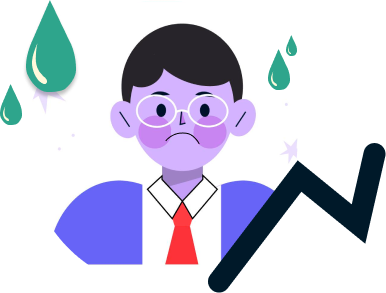
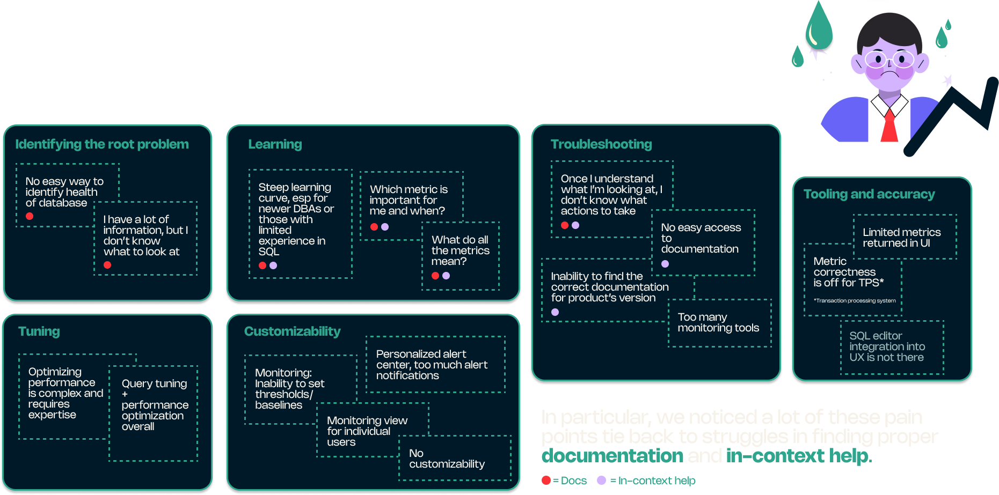
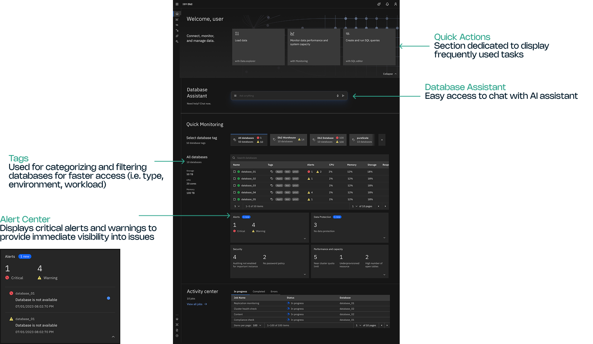
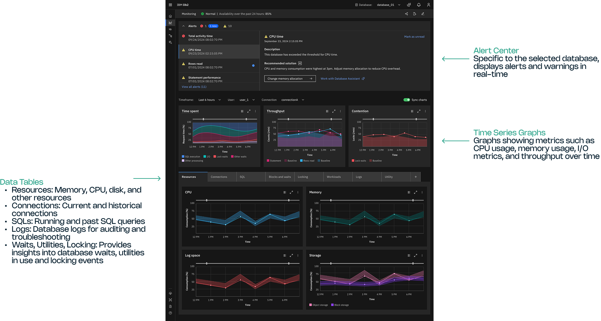
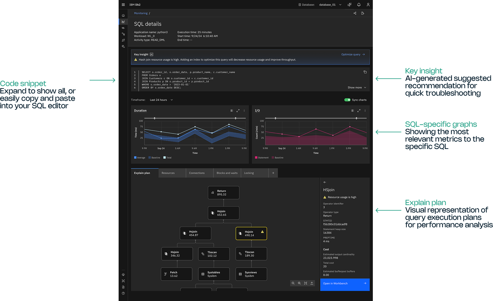
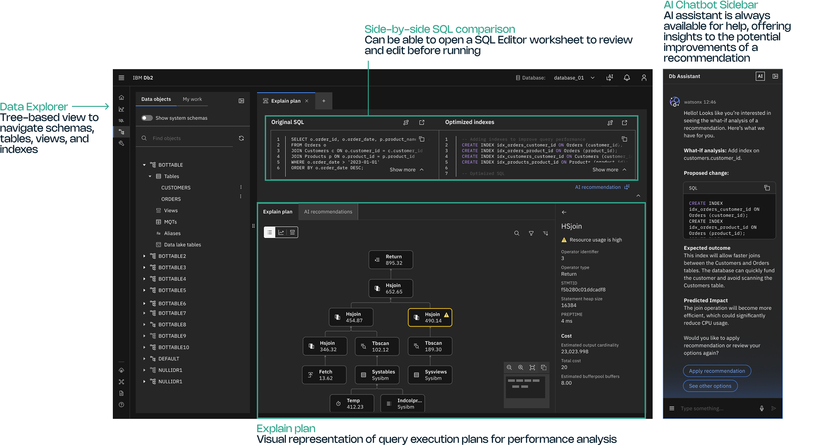
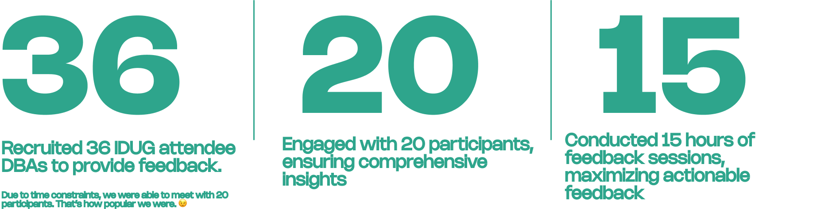

An AI-driven database management console designed to streamline administration and empower DBAs of all experience levels to manage databases more efficiently, taken from concept to general availability.
Db2 is a relational database management system: an organized, secure digital filing system for very large amounts of data. It's really a family of data-management products, from an analytics warehouse to monitoring tools.
If you've never touched a database: think of Db2 as a massive, high-security filing system that companies trust to never break, never lose data, and never slow down. Database administrators are the people who keep it that way.
Db2 Intelligence Center is an AI-driven console that brings database administration into a single, intelligent workspace. Db2 sat under my team's portfolio, so I was part of the original design team that took it to market in June 2025, building on everything I'd done across the Db2 family since joining IBM in 2021.
Our target user is the DBA, the person whose job is to make sure databases never break, never lose data, and never get slow. Bob is responsible for the overall health of his company's databases. DBAs like Bob are the guardians of a company's data.

To design for Bob, we first had to understand which of his jobs-to-be-done actually needed relief. In a workshop in April 2024 we gathered pain points from real DBAs and grouped them into themes.

At IBM we use hills, a single clear sentence that captures the meaningful outcome we're designing toward, without overcomplicating it. It sets the direction for everything that follows.
"As a DBA, I can manage my databases with the assistance of AI so that I can accelerate my workflow."
Working closely with PM, we drafted a roadmap and used the cake method to decide what design would tackle, and when.
From the requirements, we settled on five core capabilities. The two I owned end to end are marked.
A single, intuitive pane of glass to monitor and manage a fleet of Db2 instances across hybrid environments, reducing context-switching and improving visibility across the whole estate, which made the landing page critical to our users' efficiency.
Db2-specific monitoring with deep visibility into CPU, I/O, waits, and locks, enabling fast root-cause identification, preventing degradation, and cutting troubleshooting time. A monitoring hub directly addressed one of Bob's daily pain points.
Automated analysis and tuning of queries with AI-powered recommendations for indexing and structure. I drove the data workbench so users could optimize and complete their work through the UI rather than the command line.
Simplified configuration management: an intuitive interface to view, edit, and track Db2 settings, minimizing errors and reducing manual overhead. Another part of the data workbench I drove, letting users fine-tune and resolve issues quickly.
A generative-AI assistant offering guidance in natural language. Using telemetry, it helps DBAs resolve common issues, optimize performance, and skill up on Db2 faster, answering questions specific to your Db2 version. This assistant is where the whole product began, and the effort I led first before it grew into a full product.




Throughout the project we ran biweekly feedback sessions with members of Db2's technical advisory board, users who know the product inside out. But we wanted to validate at a larger scale.
Db2 has a famously loyal community, and every year they gather at IDUG (the International Db2 User Group, owned by the users, not IBM). With IDUG EMEA in Valencia, Spain around the corner, I represented design to test our work. That meant building a prototype in a week, which my team and I pulled off in time for testing.

Participants appreciated the clean, efficient layout and the logical order of information. The feedback that shaped our next iterations:
Across conversations with customers and the product team, one question kept rising to the top: how do we build a product whose core audience is getting older, while also making it accessible to a younger, newer generation of DBAs?
Db2's primary users are senior DBAs, and they're the first to worry about the next generation: how to onboard junior DBAs and help them get familiar with the product. That points toward developer editions and pricing plans accessible to a far wider audience.
I returned the following year to IDUG NA in Atlanta, this time as Db2 Intelligence Center reached general availability. We received widespread acclaim for the look of the product and, most importantly, its intuitive experience, validating exactly what we'd seen in testing in Valencia.
This product was made with care, from daily evening working sessions with our development team in India to design reviews with PM during the day. We worked around the clock as a team. Db2 has a special place in my heart, and I'm honored to have been part of its debut.